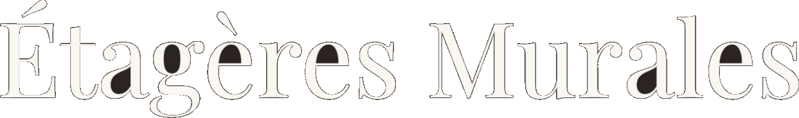

Mur plein ou creux ?
Chevilles pour
plaque de plâtre
Lot de 3 VASAGLE
12 cm de profondeur
5 kg max par étagère
2 montages possibles
Objets non inclus
Rendu 3D, illustration
49,90 €
Livraison offerte en France

Des étagères murales pour sublimer vos murs et finir vos pièces.
etageres-murales.fr